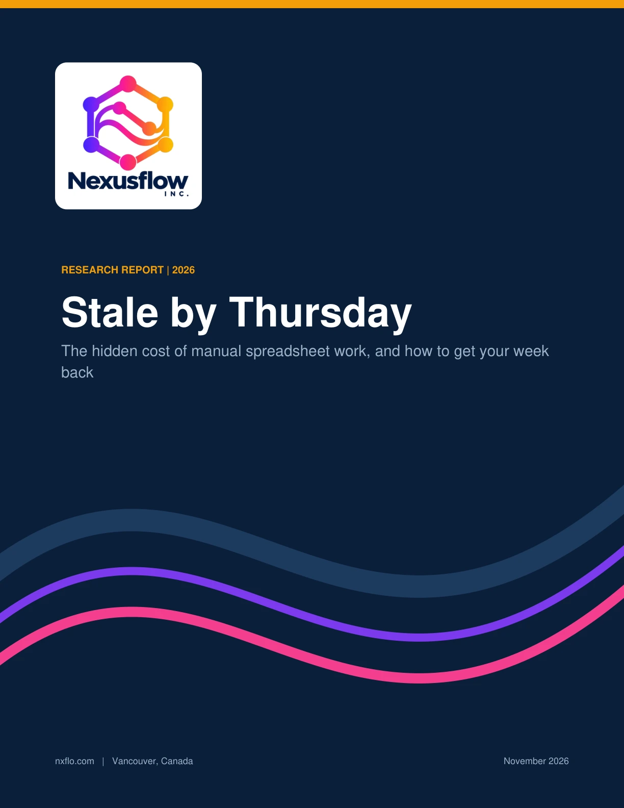
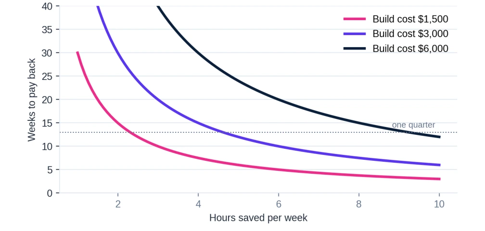

Featured article / Research report
Stale by Thursday
The hidden cost of manual spreadsheet work, and how to get your week back.
The report at a glance
Download, clean, merge, rebuild. For many teams, the weekly report is a familiar routine—and by the time it is ready, the data has already moved on.
This report brings together survey findings, spreadsheet research, and practical examples to explore the time, errors, and stale information behind manual reporting. It then lays out a practical way to start: measure one recurring task, automate it, and compare the results before moving to the next.
Free PDF · 30 pages · 3.1 MB

Inside the report
Where the week goes.
What getting it back could look like.
Two charts from the full report offer a starting point. Explore the bars and payback curves to see the values and assumptions behind them.
How much time is it, really?
Published estimates vary because they measure different tasks and different groups of workers. The figures below should not be added together.
Hours per week · published estimates
Hover over a bar or tap it for source details. Use Tab or ↑ ↓ to explore with a keyboard; Escape dismisses the tooltip.
When could automation pay back?
Hours saved each week change the payback period. The report explores this relationship using an illustrative value of $50 per hour.

Hover near a line or tap the chart to see its values. With keyboard focus, use ← → for hours and ↑ ↓ to switch lines. Press Escape to dismiss.
View larger chart
From research to a practical first step
Start with one recurring chore.
The report recommends timing a task for two weeks, choosing the simplest automation that works, and running the new output alongside the old for several cycles.
The full document includes examples across finance, operations, sales, HR, and facilities, plus an automation ladder, a scoring framework, payback examples, and a 30–60–90 day plan.
About the evidence: The report draws on studies with different populations and definitions, including vendor-commissioned surveys, some older research, and anecdotal online discussions. Illustrations use simplified assumptions. Full sources and limitations appear in the PDF.